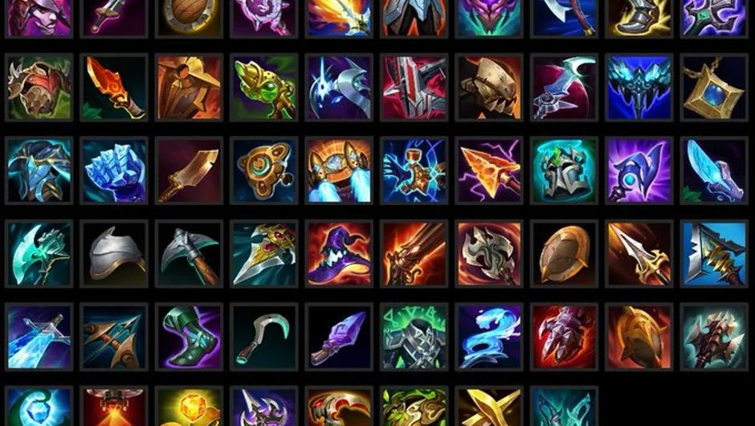
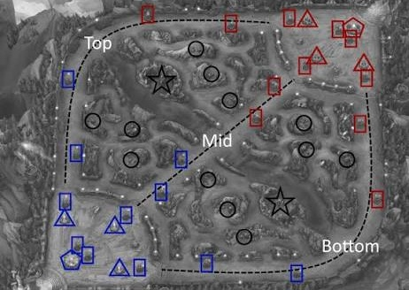
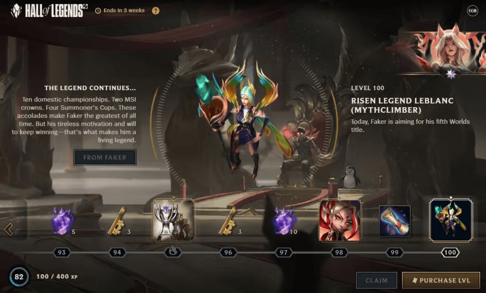

ARMI DIFFERENTI
Numerose armi per modificare la tua build in battaglia,
perfetto per chi ama personalizzare il proprio loadout
in base alla situazione
MAPPA STRATEGICA
La mappa è piena di punti strategici, differenti percorsi
da seguire, punti per fare agguati e oggetti mitici da trovare


BATTLE PASS STAGIONALE
Nuove missioni ogni settimana per sbloccare skin e nuovi personaggi,
oltre a premi per i giocatori più costanti